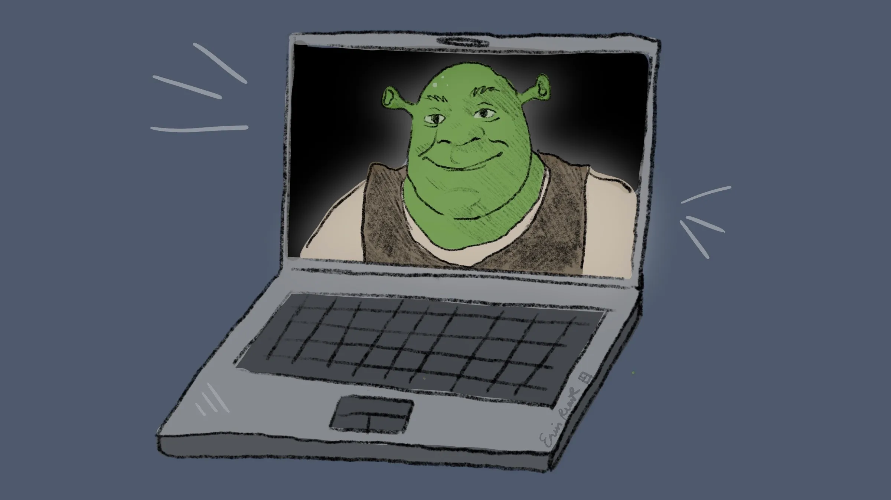

Klasa 2b 3b
Moje umiejętności:
-Potrafię zrobić stronę internetową
- Potrafię
-Potrafię
I want to expand my knowledge in IT.
In the future, I want to work in the IT industry and do things connected with computers. I chose this direction because I like informatics, and also in the IT industry there are a lot of cool jobs that I would enjoy.
